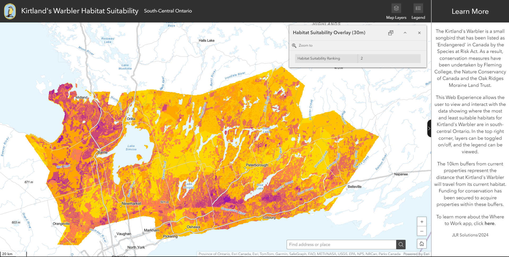
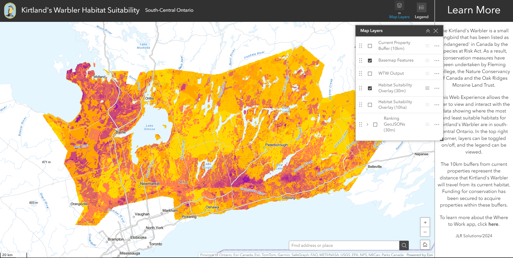
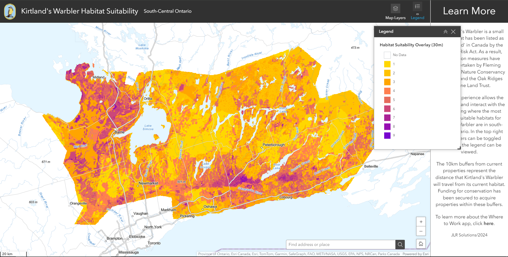

Areas of Natural and Scientific Interest
The original data layer of the Areas of Natural and Scientific Interest contained many different rows, which could be categorized into 4 different categories including ‘Earth Science’, ‘ANSI, Life Science’, ‘Candidate ANSI, Earth Science’ and ‘Candidate ANSI, Life Science’. The locations used in the analysis were the current/non-candidate ANSI which were ranked as 9/highest suitability, and when processing the data, the candidate ANSI were grouped together with all other areas not covered by either selection within the study area, and ranked as 1/least suitable. The final output of this layer can be seen in the image below.

Protected Areas
Before creating the protected areas layer, the team contacted multiple Conservation Areas and Land Trusts within the study area for access to their protected lands data as well as searching their Open Data Portals for publicly available datasets. The final lands that were included were from Central Lake Ontario Conservation Authority, Couchiching Conservancy, Kawartha Land Trust, the Ganaraska Forest, and the Northumberland County Forest. Within 1050 meters from protected areas was reclassified as rank 9/Most Suitable and greater than 1050 meters from protected areas was reclassified as 1/Least Suitable. The final protected areas layer can be seen below.
Tree Species
In-progress.
Soils
Each soil type in the soil layer has a Habitat Suitability Index (HSI) ranking ranging from 1-4, with 1 being the least suitable and 4 being the most suitable for Kirtland’s Warbler. The least suitable soils had high clay content and higher pH, while the most suitable soils had high sand content, meaning high drainage, and lower pH. Soils with an HSI of 4 were reclassified as Highest Suitability, 3 as Very High Suitability, 2 as Moderate Suitability, 1 as Low Suitability, and less than 1 as Lowest Suitability. The final soils layer can be seen below.
Southern Ontario Land Resource Information System
The Southern Ontario Land Resource Information System data contains a landscape-level inventory of various landcover types throughout the Ontario Ecoregions 5E, 6E, and 7E. The original data layer contained 32 different landtypes, with only treed sand dunes, tallgrass savannahs and tallgrass woodland being considered 9/most suitable. Other important landtypes included open tallgrass praries and plantations which were rated with a 7/moderately-high suitability, coniferous forest forest, sparse treed and tilled areas which were rated as a 5/moderately suitable, and all other landtypes which were rated as 1/least suitable. The final output of this layer can be seen in the image below.
Once the input layers were assembled into the correct format, the main element of the ArcGIS Pro analysis relied on the Weighted Overlay tool. In the Weighted Overlay tool, every input layer is assigned a weight that determines how much each will impact the output. The total of the weights must add to 100. The final input layers and their weights were:
This weighting schema focuses on soils, with the largest weight being 36%. This is because of previous conservation efforts and analyses that focused on sandy soils as the only criteria. The final weighted overlay layer can be seen below and also in the Mapbox Visualization tab in an interactive format.
One of the outputs of the project was creating a static suitability map. This map includes 3 different layers, overlain on the basemap:
This map was created to aid the clients in quickly determining suitable habitat down to the specific property, and giving them the option of viewing the data online or offline. The roads and road labels were made partially transparent to ensure the suitability colours would not be blocked, as well as waterbody labels were created to give more insight into locations, since placenames (cities/towns) were not used.
This map was completed by adding general cartographic elements to the layout and finalized in a PFD format, on an ANSI E (44 inches by 34 inches) page size, to allow the client to zoom into a readable level and still be able to read fine details. This final map created can be seen in the image below.
The team created both an ArcGIS Online web map and Web Experience to share with the clients and any related partners. The Web Experience can be found here: Web Experience. Popups were configured in the web map to show the habitat suitability ranking wherever the user clicks. The ArcGIS Online web map was then used in a Web Experience, as seen below. A contextual sidebar was added, with the user being able to collapse and expand it as needed. It includes a background on the status of Kirtland’s Warbler as ‘Endangered’ and describes what the purpose of the Web Experience is as well as the features available to the user.
The option to toggle layers on and off was added, as seen below.
A legend was also added, as seen below.
A swipe feature is also available, as seen below, so that users can compare the ArcGIS Pro analysis to the Where to Work app output.
This Web Experience and Web Map will become only only accessible to clients and partners upon the team's graduation, so the analysis can be expanded and added to.
In-progress.
In-progress.